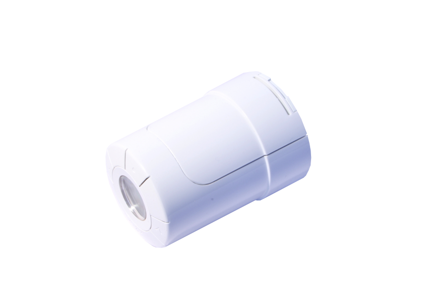
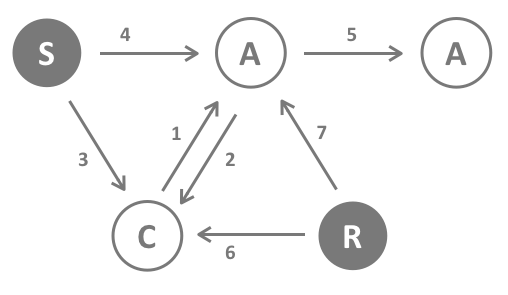
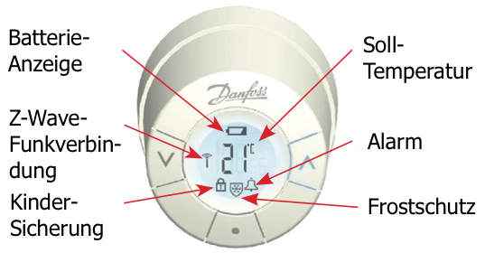

DAN_LIVC_RAK
Firmware Version : 2.6 |
 |
Kurzinfo
S Dieses Gerät ist ein Z-Wave-Funksensor. Längeres Drücken der mittleren Taste schaltet das Gerät in den Management-Modus (Anzeige M im LCD). Ein Drücken auf die Mitteltaste für 3 Sekunden bestätigt die Inklusion und Exklusion. Ein einfacher Tastendruck auf die mittlere Taste unabhängig vom gewählten Modus weckt das Gerät auf. Ein längerer Druck auf die Mitteltaste schaltet vom Management-Modus zurück in den Normalmodus.
Weitergehende Informationen finden sich in den jeweiligen Abschnitten dieses Handbuches.
Was ist Z-Wave?
Dieses Produkt entspricht dem Z-Wave-Standard. Z-Wave ist der internationale Funkstandard zur Kommunikation von Geräten im intelligenten Haus. Z-Wave-Geräte funken in Europa auf der Frequenz von 868.42 MHz.Z-Wave ermöglicht eine sichere und stabile Kommunikation indem jede Nachricht vom Empfänger rückbestätigt wird (Zweiwege-Kommunikation) und alle netzbetriebenen Geräte Nachrichten weiterleiten (Routing) können, wenn eine direkte Funkbeziehung zwischen Sender und Empfänger gestört ist.
Dank Z-Wave können Produkte unterschiedlicher Hersteller miteinander in einem Funknetz verwendet werden. Damit ist auch dieses Produkt mit beliebigen anderen Produkten anderer Hersteller in einem gemeinsamen Z-Wave Funknetz einsetzbar.
Z-Wave unterscheidet zwischen Controllern und Slaves. Slaves sind entweder Sensoren S, die Daten ermitteln oder Aktoren A, die Aktionen ausführen (Sensoren und Aktoren sind mitunter in einem Gerät vereint). Controller sind entweder statische netzgespeiste Controller C (auch IP-Gateways genannt) oder mobile batteriebetriebene Controller (Fernbedienungen, Batteriewandschalter)R. Damit ergeben sich eine Reihe prinzipieller Kommunikationsmöglichkeiten in einem Z-Wave-Netz:
- Controller steuern Aktoren.
- Aktoren melden Änderungen ihres Schaltzustandes
- Sensoren melden Messwerte oder Statusänderungen an Controller
- Sensoren steuern Aktoren direkt bei Ereignissen
- Aktoren steuern andere Aktoren
- Fernbedienungen erzeugen Ereignisse in einem statischen Controller, die zum Beispiel zum Steuern von Szenen genutzt werden
- Fernbedienungen steuern Aktoren
Controller können in einem Z-Wave Netzwerk zwei unterschiedliche Rollen einnehmen. Es gibt immer genau einen Primärcontroller der das Netzwerk steuert und Geräte in das Netzwerk inkludiert oder aus dem Netzwerk exkludiert. Dieser Controller kann weiter Nutzerfunktionen - zum Beispiel Tasten - besitzen. Alle anderen Controller mit Nutzerfunktionen erfüllen keine Managementaufgaben. Sie heißen Sekundärcontroller. Trotzdem verfügen sie - sozusagen als Backup - über alle notwendigen Informationen über das Netz. Das Übersichtsbild zeigt, das - batteriegestützt - Sensoren nicht direkt mit - batteriebetriebenen - Fernbedienungen kommunizieren. Sie senden nur Daten an statische Controller oder steuern Aktoren direkt.
Produktbeschreibung
Living Connect ist ein Stellventil zur Steuerung von Wandheizkörpern. Es regelt die Heizung auf eine vorgegebene Temperatur, die lokal am Gerät mittels Tasten oder über Z-Wave Funk eingestellt wird. Neben der direkten Temperatureingabe sind spezielle Heizungsmodi wie Frostschutz oder Energiesparen wählbar. Die geregelte Temperatur wird direkt am Gerät auf einer LCD-Anzeige dargestellt. Living Connect besitzt eine interne Schaltuhr, mit der für 7 verschiedene Wochentage bis zu 9 verschiedene Zieltemperaturen - genannt Setpoints - vorwählbar sind, die dann selbständig zeitabhängig geregelt werden. Weitere intelligente Funktionen sind die Erkennung offener Fenster mit entsprechendem Umschalten in den Energiesparmodus oder eine Ventiltrainingsfunktion, die sicherstellt, dass Ventile auch nach längerer Nichtbenutzung immer noch steuerbar sind. Das Gerät erwartet eine regelmäßige Funkverbindung zu einem IP-Gateway zur Aktualisierung der internen Uhr und zum Austausch von Status-Meldungen.
Der Thermostat kann an Ventile mit den Anschlüssen RA (30x1.5) oder RA2000 (Danfoss Schnappverschluss) angeschlossen werden.
Batterien
Dieses Gerät wird mit Batterien betrieben. Nur Batterien des angegebenen Typs verwenden. Niemals alte und neue Batterien im gleichen Gerät vermischen. Gebrauchte Batterien enthalten gefährliche Stoffe und dürfen nicht mit dem Hausmüll entsorgt werden!
Batterietyp: 2 * AA
Installationsanleitung

Das Gerät kann entsprechend der Raumgröße konfiguriert werden. Drei Raumgrößen sind wählbar. Die vorgegebene Größe ist P1. Um in den Management-Modus zu wechseln (M auf dem Display) und die angenommene Raumgröße zu ändern, drücken Sie die Taste (p) für drei Sekunden. Drücken Sie anschließens (v) bis 'P' auf dem LCD-Display angezeigt wird. Betätigen Sie die Taste (o). Nun können Sie mit den Pfeiltasten zwischen 1, 2 oder 3 wählen und abschließens über die Taste (o) die Einstellung beenden.
DemontageUm das Thermostat wieder zu demontieren, nutzen Sie bitte das dafür vorgesehene Werkzeug. Stecken Sie das Werkzeug - wie in der Abbildung dargestellt - in die Vertiefung in der Batteriehalterung. Lassen Sie das Werkzeug in dieser Position und drehen Sie anschließend das gesamte Thermostat gegen den Uhrzeigersinn bis dieses komplett gelöst ist.
Verhalten des Gerätes im Z-Wave Netz
I Im Auslieferungszustand ist das Gerät mit keinem Z-Wave-Netz verbunden. Damit es mit anderen Z-Wave Geräten kommunizieren kann, muss es in ein bestehendes Z-Wave Netz eingebunden werden. Dieser Prozess wird bei Z-Wave Inklusion genannt. Geräte können Netzwerke auch wieder verlassen. Dieser Prozess heißt bei Z-Wave Exklusion. Beide Prozesse werden von einem Controller gestartet, der dazu in einen Inklusion- bzw. Exklusion-Modus geschaltet werden muss. Das Handbuch des Controllers enthält Informationen, wie er in diese Modi zu schalten ist. Erst wenn der Controller des Z-Wave Netzes im Inclusion-Modus ist, können Geräte hinzugefügt werden. Das Verlassen des Netzes durch Exklusion führt zum Rücksetzen dieses Gerätes in den Auslieferungszustand.
Zur Bestätigung von Inklusion oder Exklusion drücken Sie 3 Sekunden die Mitteltaste.
Bedienung des Gerätes
Dieses Danfoss-Gerät wird über Funkkommandos von einem Z-Wave Controller aus betrieben. Es arbeitet in zwei verschiedenen Modi:
- Direkte Einstellung des Temperatur-Sollwertes über den Controller (Achtung: Es kann zu einer Verzögerung in der Ausführung eines Sollwertbefehls aufgrund des Wakeup-Intervalls des Gerätes kommen. Wenn der Sollwert beispielsweise auf 16.00 Uhr geändert werden soll und das Wakeup-Intervall 15 Minuten beträgt, sollte der Befehl spätestens 15.45 Uhr gesendet werden.)
- Herunterladen eines ganzen Wochenzeitplanes in das Gerät, durch welchen anschließend die Wärme unabhängig vom Controller reguliert wird. Das Gerät ist in der Lage, einen kompletten Zeitplan mit bis zu 9 verschiedenen Sollwerten je Wochentag auszuführen. Das Gerät errechnet die beste Zeit zum Hoch- oder Herunterregulieren der Wärme.
Der aktuelle Temperatur-Sollwert wird auf dem LCD-Display angezeigt und kann mit den Pfeiltasten auf dem Gerät überschrieben werden. Das Überschreiben ist nur temporär und gilt nur bis die nächste Änderung des Temperatur-Sollwertes (entweder ausgelöst durch einen externen Z-Wave Befehl oder durch den internen heruntergeladen Zeitplan) aktiv wird.
Das Gerät ist zudem in der Lage, offene Fenster zu erkennen (plötzlicher Temperaturabfall für kurze Zeit) und daraufhin die Wärme für 30 Minuten herunterzuregeln, um Energie zu sparen.
Lokaler LCD-DisplayÜber den lokalen LCD-Display lässt sich der Status des Gerätes ablesen.

VerbindungstestDer Thermostat ermöglicht, die Qualität der Verbindung zum Controller zu überprüfen. Drücken Sie die mittlere Taste (o) für 3 Sekunden bis 'M' angezeigt wird. Wählen Sie mit Hilfe der Pfeiltasten "LI" in der Anzeige und bestätigen Sie den Verbindungstest mit der mittleren Taste. Der Verbindungstest wird durch ein blinkendes Antennen-Symbol signalisiert. Wenn dieses Symbol nach ca. 3 Sekunden noch immer blinkt, gibt es ein Problem mit der WLAN-Verbindung. Hört das Antennen-Symbol auf zu blinken, ist die Qualität der Verbindung ausreichend. Gleichzeitig wird ein erfolgreicher Verbindungstest den Ausnahmemodus, wie folgt beschrieben, beenden.
Mögliche Probleme im Z-Wave Netzwerk: Das Gerät befindet sich im Schlafmodus und wacht regelmäßig auf. Beim Aufwachen benötigt das Gerät eine drahtlose Verbindung zum Controller, um - falls nötig - das Zeit- und Heizprogramm zu aktualisieren. Wenn keine WLAN-Verbindung zum Controller hergestellt werden kann, wechselt das Gerät in einen Ausnahmemodus, welcher durch eine blinkende Glocke in Verbindung mit einem blinkenden Antennensymbol auf dem LCD-Display angezeigt wird. Um diesen Ausnahmemodus so schnell wie möglich wieder zu verlassen, versucht das Gerät eine Verbindung durch Anwendung des sogenannten 'Lost' Verfahrens von Z-Wave mit Hilfe eines Static Update Controller (SUC) im Netzwerk wiederherzustellen. Sobald dies erfolgreich war, wird der Ausnahmemodus beendet. Im Falle des Scheiterns - z. B. weil der Controller noch abgeschaltet ist - bleibt das Gerät im Ausnahmemodus und wiederholt den 'Lost' Prozess. Dies verkürzt die Batterielebensdauer sehr stark. Um diese Situation zu vermeiden, sollten die folgenden Voraussetzungen erfüllt sein: (a) Der Thermostat verfügt über eine stabile direkte WLAN-Verbindung zum Controller oder (b) es existiert ein statischer Controller, welcher als SUC im Z-Wave Netzwerk dient, und eine dauerhafte Verbindung zwischen dem Gerät und diesem SUC.
Das Gerät wendet mehrere Technologien an, um die Batterielebensdauer zu verlängern. Es kombiniert mehrere Befehle zu einem einzelnen Befehl und passt sein Verhaltens an die Fähigkeiten des Netzwerk-Controllers an. Achten Sie darauf, Danfoss Living connect nur in Verbindung mit Z-Wave Controllern, welche eine vollständige Umsetzung aller von Danfoss empfohlenen Batterielebensdauer verlängernden Methoden unterstützen, zu nutzen. Alle Controller mit Z-Wave.Me Software (wie z.B. RaZberry) unterstützen diese Methoden in vollem Umfang.
Ein geringes Batterielevel wird durch Blinken des Glockensymbols angezeigt. Gleichzeitig leuchtet für etwa 19 bis 22 Stunden der Display 8 mal pro Stunde auf. Eine schwache Batterie führt zudem dazu, dass das System automatisch in den Frostschutzmodus umschaltet.
Kinderschutz
Das Gerät verfügt über einen Kinderschutzmechanismus. Dabei wird die lokale Bedienung über Tasten gesperrt und es ist nur noch eine Bedoenung über Funk möglich.
Die Sicherung wird via Funk über Z-Wave Kommandos aktiviert/ deaktiviert. Ein kleines Sicherungssymbol im LCD-Display signalisiert den Sicherungsmodus.
Kommunikation mit einem batteriebetriebenen Gerät
W Das Gerät ist batteriegespeist und damit in der Regel in einem Tiefschlafmodus um Strom zu sparen. Im Tiefschlafmodus kann das Gerät keine Funksignale empfangen. Daher wird ein (statischer) Controller benötigt, der netzgespeist und damit immer funkaktiv ist. Dieser Controller - zum Beispiel ein IP-Gateway - verwaltet eine Nachrichten-Mailbox für dieses batteriegespeiste Gerät, in dem Nachrichten an dieses Gerät zwischengespeichert werden. Ohne einen solchen statischen Controller wird die Nutzung dieses batteriebetriebenen Gerätes sehr schnell zur Entladung der Batterie führen oder die Nutzung ist komplett unmöglich.
Dieses Gerät weckt regelmäßig auf, meldet dies durch Aussenden einer sogenannten Wakeup-Notifikation und leert dann seine Mailbox im statischen Controller. Dafür muss bei der Inclusion die Node-ID des Controllers und ein Aufweckinterval definiert werden. Erfolgt die Inklusion durch einen statischen Controller wie zum Beispiel ein IP-Gateway, wird dieser Controller diese Konfiguration automatisch erledigen und in der Regel eine Nutzerschnittstelle anbieten, um das Aufweckinterval den Nutzerbedürfnissen anzupassen. Das Aufweckinterval ist ein Kompromiss zwischen maximaler Batterielaufzeit und minimaler Reaktionszeit des batteriegespeisten Gerätes.
Ein Klick auf die Mitteltaste weckt den Sensor auf. Er bleibt danach 30 Sekunden wach.
Es ist möglich die Gerätenummer 255 als Zielgerät für die Wakeup-Notifikation anzugeben. In diesem Falle wird die Nachricht als Broadcast an alle Geräte mit direkter Funkverbindung gesendet. Dem Vorteil der sofortigen Benachrichtigung steht als Nachteil gegenüber, das das Gerät gegebenenfalls mehr Zeit im aktiven Modus und damit mehr Batterieladekapazität verbraucht.
Node Information Frame
NIF Der Node Information Frame ist die Visitenkarte eines Z-Wave Gerätes. Es ist ein spezielles Datenpaket, in dem der Gerätetyp sowie die Funktionen des Gerätes bekanntgemacht werden. Inklusion und Exklusion eines Gerätes wird von diesem mit einem Node Information Frame beantwortet. Zusätzlich kann der Node Information Frame für bestimmte Konfigurationsprozesse des Z-Wave Netzes - zum Beispiel das Setzen von Assoziationen - benötigt werden.
Ein Klick auf die Mitteltaste sendet einen Node Information Frame aus.
Assoziationen - wie werden andere Geräte gesteuert?
A Z-Wave Geräte können andere Geräte direkt steuern. Diese direkte Steuerung heißt in Z-Wave Assoziation. In den steuernden Geräten muss dazu die Geräte-ID des zu steuernden Gerätes hinterlegt werden. Dies erfolgt in sogenannten Assoziationsgruppen. Eine Assoziationsgruppe ist immer an ein Ereignis im steuernden Gerät gebunden (Tastendruck oder Auslösen eines Sensors). Bei Eintritt dieses Ereignisses wird an alle in einer Assoziationsgruppe hinterlegten Geräte ein Steuerkommando gesendet.
Assoziationsgruppen:
| 1 | Ziel für alle Nachrichten des Gerätes (max. Anzahl Geräte: 1) |
Kommandoklassen
Unterstützte Kommandoklassen- Battery (Version 1)
- Clock (Version 1)
- Thermostat Setpoint (Version 2)
- Wake Up (Version 2)
- Version (Version 1)
- Climate Control Schedule (Version 1)
- Multi Command Encapsulated (Version 1)
- Manufacturer Proprietary (Version 1)
- Manufacturer Specific (Version 1)
- Protection (Version 2)
Technische Daten
| Batterietyp | 2 * AA |
| Explorer Frames | Nein |
| SDK | 4.28 |
| Geräteart | Slave with routing capabilities |
| Allgemeiner Z-Wave-Gerätetyp | Thermostat |
| Spezieller Z-Wave-Gerätetyp | Setpoint Thermostat |
| Router | Nein |
| FLiRS | Nein |
| Firmware Version | 2.6 |
Erläuterung Z-Wave-spezifischer Begriffe
- Controller... ist ein Z-Wave-Gerät mit erweiterten Fähigkeiten zur Verwaltung eines Netzes. Dies sind in der Regel Gateways oder Fernbedienungen. Batteriegespeiste Wandschalter können auch Controller sein.
- Slave... ist ein Z-Wave-Gerät mit erweiterten Fähigkeiten zur Verwaltung eines Netzes. Es gibt Sensoren, Aktoren und auch Fernbedienungen als Slaves.
- Primärcontroller (engl. Primary Controller)... ist der zentrale Netzverwalter des Z-Wave-Netzes.
- Inklusion (eng. Inclusion)... ist der Prozess des Einbindens eines neuen Gerätes ins Z-Wave-Netz.
- Exklusion (engl. Exclusion)... ist der Prozess des Entfernens eines Gerätes aus dem Z-Wave-Netz.
- Assoziation (engl. Association)... ist eine Steuerbeziehung zwischen einem steuernden und einem gesteuerten Gerät. Die Information dazu wird im steuernden Gerät in einer Assoziationsgruppe hinterlegt.
- Wakeup Notifikation (engl. Wakeup Notification) ... ist eine spezielle Funknachricht, mit der ein batteriegespeistes Gerät bekanntmacht, daß es im Aufwachstatus ist und Z-Wave-Nachrichten empfangen kann.
- Node Information Frame... ist eine spezielle Funknachricht, mit der ein Z-Wave-Gerät seine Geräteeigenschaften bekanntgibt.
Entsorgungshinweis
Dieses Gerät enthält Batterien. Bitte beachten Sie die gültigen Entsorgungsvorschriften für Batterien.
Das ist ein elektrisches Gerät. Es kann kostenfrei bei entsprechenden Annahmestellen abgegeben werden.